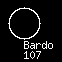
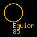
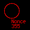

The Star Map
The Star Map is your window to the UltraCorps universe. You will use the Star Map to display World Information and to investigate nearby worlds to decide whether, and how, you want to attack them.
To access the Star Map, click the Homeworld button on the navigation bar. The Star Map is on the left side. If you just started, your homeworld is the only white world. It should be in the center of the Star Map. All the yellow worlds are places you'll want to own. The red worlds belong to other players.
Map Colors:
Worlds are color-coded to indicate their status:
|  | Your world |
|  | Nobody world . . . unowned! |
|  | Another player's world. The default color for other empires is red. You can pick a different color for any player's empire on his Empire page. |
| Unformed world. As more players join the game, a planet may appear here. Once the game closes, any remaining unformed worlds will remain unformed. |
Distances
The Star Map is always centered on one world. All other worlds have a number showing their distance from that world. To center the map on the world whose information page you are viewing, click the Center Map link at the top of the World Information panel.
Using The Star Map
- Quick Scan: Move the pointer over any world to display its basic information in a panel beneath the map:
- World name.
- World owner.
- X,Y coordinates (0,0 is the center of the universe).
- Distance from currently selected world.
- Firepower, EI, and RER.
- Distance to world/number of turns to get there. Click Center Map on a World Information page, and the map will show the distance from your chosen world to each other world on the map. If you are deploying a fleet, you will see a slash and a second number (the /1 in the example above). This is the number of turns it will take your fleet to get there. Obviously, this depends on the fleet's speed!
- Detailed Report: Click on a world to display its World Information page.
- Panning: Use the arrows on the map border to pan up, down, left, right, and diagonally.
- Zoom In and Out: Use the zoom buttons to get a close-up view of a small area, a big-picture view of a large region, or anything in between. At the higher zoom values, you won't see world names or other information . . . just colored dots.
- Homeworld:Between the Zoom In and Zoom Out buttons is Home. Click on this at any time to center the view on your homeworld.
- World Finder:To locate a world, enter the complete world name in the Find World box below the map. It is not case sensitive.
Creating Your Own Maps
For those who want to crunch numbers in a spreadsheet program, or create their own mapping programs, the system exports a .csv file, updated each turn. You can find a link to this file at the bottom of the Show All Worlds page:
- PUB games have a file called worlds.csv.
- Mega and ring games have a separate .csv file for each turn.
- Solo games don't have this feature.